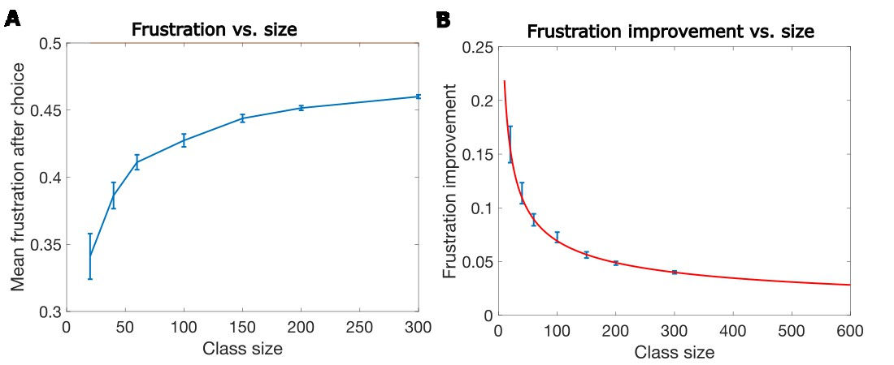
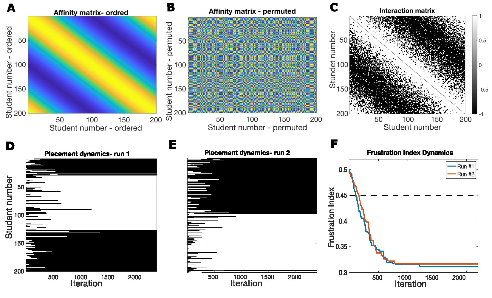
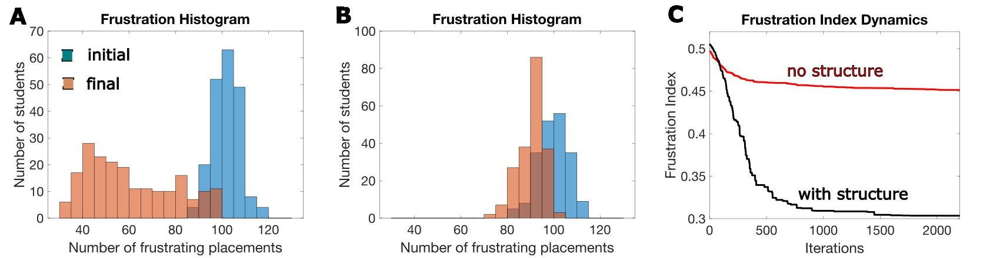
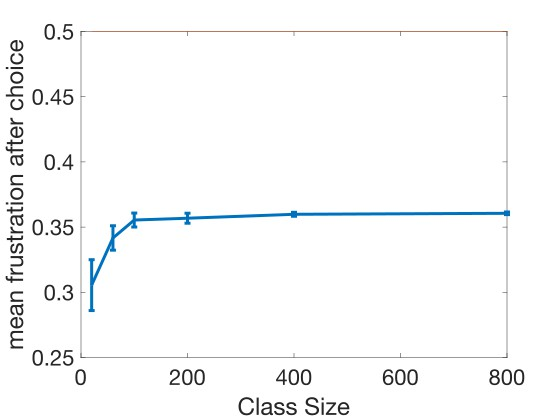
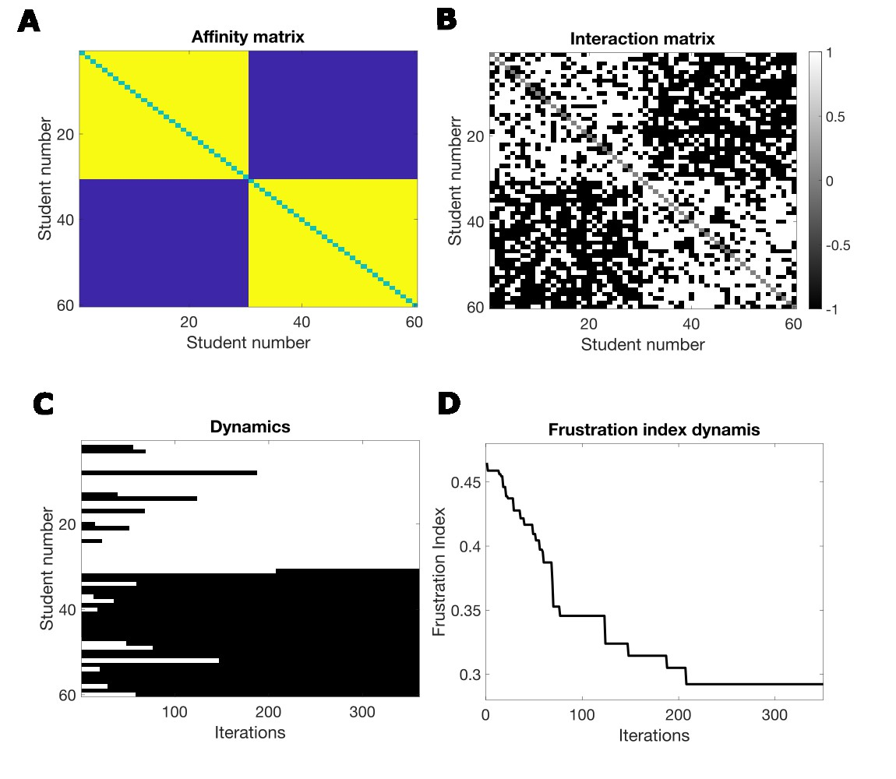
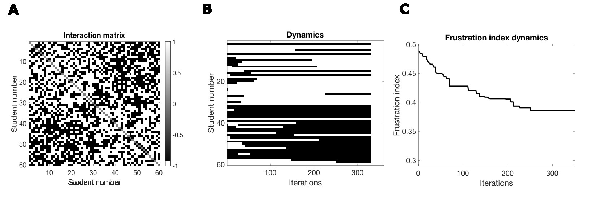
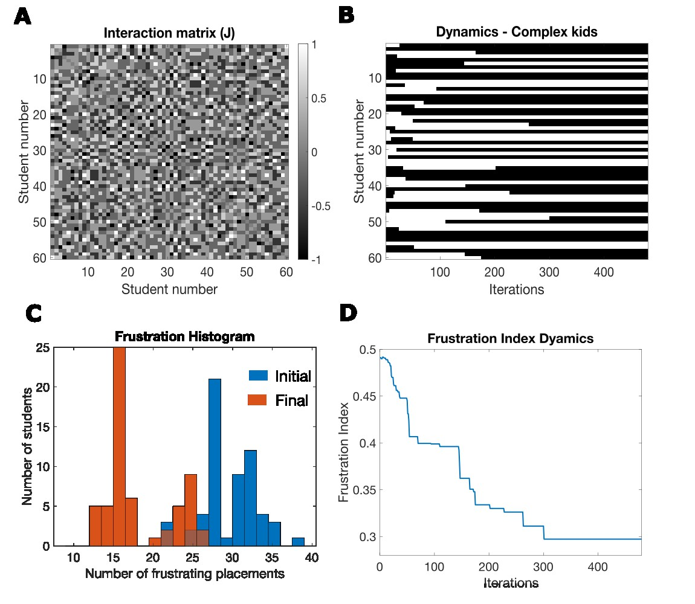
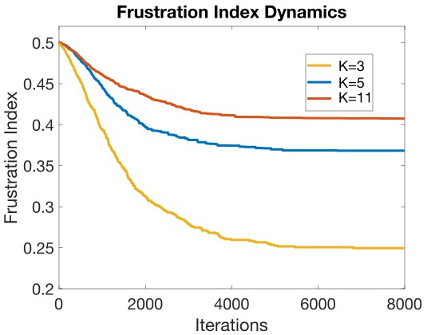

Due to the advent of AI, which has made people and especially teachers superfluous, and due to severe budget cuts, class sizes have increased from 30 to 300. This is better for everyone: it stems from market economy, and will decrease taxes, so by definition it is better. If you do not believe me, just ask ChatGPT. In any case, I am not here to argue. All I want to know is whether the democratic class choice process is still relevant for this class size. After all, it will be simpler and cheaper if we let the computer make these decisions as well. One way to resolve this is to ask Madison if she still cares what class she is in after the class size increase. Her answer was: : “I don’t really care if I’m in the same class as Janel. Yes, I know she hates me, but the class is so big that I never see her anyway. There are so many other annoying kids in the class, so who cares?"
In the democratic classroom example of Chapter 2, two classes of approximately 30 students each are chosen from 60 students in total. Naively, one would think that in a larger classroom, there will be more students I like, and more students I don’t like, so it’s a wash. This is indeed true for the initial randomly chosen class, which has a frustration level of 50% regardless of size. However, the question we are asking here is whether the democratic choice will make people happier in a larger class as well. Countries are a bit bigger than even a large class, so if choice is not relevant to a large class, this might generalize to a country.
Previous analysis of a physics model closely related to the democratic classroom (the SK model cited in reference 1 of Chapter 2) indicates that as the dimension of the system grows, the reduction in frustration due to choice decreases. For the physics model, dimension means number of spins; for the classroom model, it is the number of students. This analysis indicates that the reduction in average frustration over the initial random state is proportional to 1/√N, where N is the dimensionality of the system. This is not good news, as it means that as the size of democracy grows, its benefits disappear.

To illustrate what this means, I simulated the democratic classroom for different total sizes ranging from 20 to 300 (Fig. 3.1). In Figure 3.1A, we show the actual frustrations after class choice as a function of size. We see that frustrations systematically increase as the class size increases. In Figure 3.1B, we show the improvement in frustrations over the initial frustration level of 0.5 found in the random class placement. The red curve of Figure 3.1B shows the theoretical prediction assuming the improvement due to choice scale like 1/√N as in the SK model. If we project this out to a group of 1 million people, still smaller than most countries, we find that the improvement in frustration will be less than 1% over the initial random choice. Indeed, the choice process itself, for a system of 1 million people is likely to add much more frustration than the improvement gained from this choice. This implies that democracy, or at least this model of democracy, is in trouble for systems with even a moderate size.
One might still ask why a larger class size reduces the ability of choice to reduce our frustration. Is there an intuitive way to understand it? A possible, though not simple, answer is that the connectivity matrix generates constraints. By constraints, I mean it tells us if grouping two people together (for example, Janel and Madison) is favorable or unfavorable. As the class size increases, the number of constraints increases faster, on the order of the square of the class size. Frustrations occur when these constraints are broken, for example when we decide to put Janel and Madison in the same class. Every class choice we make breaks many of these constraints. Because the number of constraints increases faster than the class size, the bigger the class size, the harder it is to find favorable class partitions, and each possible relatively favorable choice still causes much more frustrations.
What can we conclude from this? One possible response could be: “Yes, I always knew democracy was useless, which is why I never vote.” Another answer could be: “This model is so simple that it’s useless. Why do you think such a simple model of a classroom could tell us anything about a real democracy?” Another possible approach, however, is to ask which salient feature characteristic of the real world was dropped in this model and try at first to add only that single feature to see how it affects the results of this model. What could that feature be?
In the next section, we examine the impact of one of the simplifying assumptions: who I like, and dislike is not correlated with who my friends like and dislike. In simpler terms, this means including the assumption that if you are my friend, it is likely that you will like many of my other friends. In more technical terms, it will be the assumption that the affinity matrix is correlated.
“Janel,” Olivia said, “I met this new kid, Roger. He is really cool. I think you’ll like him too.” It’s quite expected that because Olivia and Janel are friends, if Janel likes Roger then so will Olivia. It’s not guaranteed, though, and it’s possible that the next day Olivia will tell Janel, “I met Roger. He doesn’t like unicorns. Why did you think I’d like him?” Usually though, we tend to like our friends’ friends. In more general terms, this points to correlations: who different people like or don’t like is not random — it is correlated.

Such correlations are not only true for friendships but also generalize to many other aspects. For example, if both you and I support increasing the minimum wage, we are also both more likely to support the right for abortions. Again, this is not guaranteed: both of us might be pro worker, but one of us might be a devout Catholic who opposes abortions. However, statistically, in most cases views on these different issues are correlated. This is surprising, because these are different issues, and there is no a priori reason to assume that people's ideas about these different issues would be correlated, but in many cases such correlations exist. Why such correlations exist is an interesting issue, but at this point I will concentrate mainly on the consequences of such correlations.
Surprisingly, the observation that Janel is likely to like Olivia’s friends can save democracy. I will demonstrate this below using a slight modification of the democratic classroom model. I will also show that it might have additional troubling consequences. At first, it might seem that correlated affinity and the reduction in frustration are unrelated. Before I explain why this happens, let’s demonstrate that this is indeed the case. We will first demonstrate this for a class with 200 students, a case in which democracy without correlations seems nearly useless.
To set up the modified democratic classroom, I will define one more concept: the affinity matrix. The only difference with the previous version of the democratic classroom is how the interaction matrix is set, such that it reflects correlations. A description of the correlations between all the students in the classroom can be captured by an affinity matrix. When correlations exist, the affinity matrix is not uniform or random, but has a structure. For example, the affinity matrix will capture the notion that if Janel likes Roger, then Olivia is also likely to like Roger. This affinity will influence whether Olivia likes Roger, but may not deterministically determine it, because it might fail to consider that Roger does not like unicorns. The interaction matrix we talked about in Chapter 2 depends on the affinity matrix but is not deterministically determined by it. If this is a little confusing, I provide more concrete examples below.
< p>To do this, we first set up a structured affinity matrix. In this specific example, I like those closer to me, and dislike those further away, and this preference gradually shifts across the class. An affinity matrix for this setup is shown in Figure 3.2A. This matrix shows that my likelihood to like or dislike other students in class is similar but not identical to my neighbors, and that the preference shifts gradually across the class. Note that although there is a clear smooth structure here, this might not be apparent at first sight. If we simply shuffle the names of students in the student list, such that Adam, who was originally student 1, is now student 131, and Jenny, who was originally student 127, is now student 31, the apparent structure of the affinity matrix seems to disappear (Fig. 3.2B), though in truth the structure is the same. The existence of a structure is much more apparent with specific ordering of student list. For clarity, I will use the unshuffled list of students from now on.Given this, an affinity matrix and interaction matrix can be generated. This matrix, like the one in the previous chapter (e.g: Fig. 2.1B ), is composed of 1 and -1 elements. The affinity matrix does not deterministically determine the interaction matrix; it only sets the probability that an entry be 1 or -1. In Figure 3.2C, we show an interaction matrix generated on the basis of the affinity matrix. Like in previous cases, the number of positive and negative interaction terms in this matrix is identical. Note also that there is still significant randomness in the interaction matrix (Fig. 3.2C).
Let’s now examine how the democratic choice process affects the class placement. One run of this process is shown in Figure 3.2D. Unlike the unstructured random connectivity case, the choice process here generates a class preference that has clear boundaries (when using the unshuffled list of students). It generates two groups of students, which in general are close to each other in their affinity. However, if we run this again with the same interaction matrix, different boundaries would be chosen (Fig. 3.2E). In general, for a class of 200 students, there are about 200 possible final boundaries. The dynamics of the frustration index in these two different runs are similar, however (Fig. 3.2F).

In Figure 3.3 we compare the structured case to the unstructured case, for the same class size. In the structured case, the choice process makes the final frustration histogram highly separated from the initial histogram (Fig. 3.3A), and the average frustration index is greatly reduced until it reaches a value of about 0.33 (Fig. 3.3C – black line). In comparison, the frustration index from an unstructured class with 200 students generates a less well-separated histogram (Fig. 3.2B), and the frustration index bottoms out at about 0.45 (Fig. 3.3C – red). Note that this reduction in frustration with correlations is similar to the reduction obtained when the number of students in the class with no correlations is about 20. So, in some sense, structure effectively reduced the dimensionality of the class by a factor of 10.
When the distribution of frustrations in the final state (Fig. 3.3A) is examined, we see a broad distribution. So, although the average frustration level is low, some students remain frustrated. Who are these frustrated students? The answer is simple: they are the students near the class boundary. Those near the class boundaries have many neighbors whom they like who are in the other classroom, and many students at the other end of their class, near the other class boundary, are students they typically dislike. Since what we showed here is a noise-free case, in the sense that each student makes perfect decisions, these boundaries are frozen. This means that some of these students are stuck in a highly unsatisfactory class placement. Note, however, that this misfortune is due to chance, not to anything inherent to these specific students.
Above, we showed one example of how structured affinity makes the reduction of frustration due to the ability to choose much greater than for a random unstructured interaction matrix. We only showed it for one class, though: a class with 200 students. In Figure 3.4, we show that this generalizes to different class sizes. We show that when the class size grows, but the structure stays proportionally the same (its correlation length scales with the class size), the final frustration hardly changes.

It’s interesting to note that with correlations, the level of frustration seems to asymptote. This means that frustration reaches a value that is independent of size. Therefore, huge democracies with millions of people can still exhibit a benefit from democracy. However, this is only true provided that there is a structured affinity between the people. If there is no structured affinity, the value of democracy is marginal.
Structured affinity might sound like a confusing technical term, but its meaning is simple. In the classroom context, it implies that if you are my friend, it is likely that you will also like my other friends. It therefore becomes clear why it is easier to reduce frustrations for structured affinity when compared to unstructured or random affinity. This happens because it is easier to group together a large group of students when the class has clusters of students who mutually like each other. If I want to be in the same class as you and if I tend to also like your friends, it is easy to put us all in the same classroom. However, if on average I only like about half of your friends, and you only like about half of my friends, it is difficult and usually impossible to generate a class partition where we would both like a large majority of the other students.
To be more specific, in a structured affinity, if Olivia and Janel are friends, and if one of them likes Roger, then the other is also likely to like Roger (if he only liked unicorns), and we can start by putting all three in the same class. However, if affinity is unstructured, if Olivia likes Roger, and even though Olivia and Janel are friends, there is only a 50% chance that Janel would like Roger, so it might be more difficult to choose if it’s beneficial for all three to be in the same class. Since there are many such decisions to make, in the unstructured affinity case many of these decisions will increase frustrations. With structured affinity, choices will be simpler, resulting in less overall frustration.
Note, however, that the boundaries between classes are arbitrary, as is clear from the two independent runs in Figures 3.2D and 3.2E. Also, the people near the boundaries that were formed are much more frustrated than those far away from the boundaries. Why are they more frustrated? What are their bad qualities that make them more frustrated? It turns out that their misfortune is random, or in other words it is due to bad luck.
In the example above, we chose a very specific continuous affinity structure (Figures 3.2 – 3.4). This is not the only option. Another very different possibility is a structure with a well-defined boundary. Such an example is shown in Figure 3.5A. In this very simple example, the class is divided into two groups: each group tends to like members of their own group, and dislike those in the other group. As in the previous example, the interaction matrix could be a noisy version of the affinity structure. For this specific example, 30% of the entries in the affinity matrix are switched. The addition of noise means that I will dislike some members of my own group and like some members of the other group, as shown in Figure 3.5B. Note that this form of noise is different from the one we assumed previously. Here, the noise is added to the interaction matrix, but there is no noise in the decision process. In other words, the dynamics are still deterministic, but the interaction matrix is not identical to the affinity matrix; it’s a noisy version of the affinity matrix.

The dynamics of class choice are shown in Figure 3.5C. We see that as in the previous case, the choice process indeed significantly reduces the frustration (Fig. 3.5D). However, in contrast to the previous example, if we run this simulation many more times, the class boundary will always be almost the same, and this is determined by the labels of the two groups that make up the affinity matrix. Here, students are happy with this choice irrespective of their location within the group; students near the boundary are just as happy as those far from the boundary.
If the level of noise added to the interaction matrix is larger, the results are somewhat different. In Figure 3.6, we show the results of simulation with 40% noise in the interaction matrix. Once more noise is added, the boundaries between the classes can start changing (Fig. 3.6 B). Note that they are still similar to the original boundaries, but they are not identical. Some students choose a classroom different from the one suggested by the affinity matrix, and this ability to choose makes them happier. In general, this addition of noise makes the frustration level higher (compare the final frustration levels in Figures 3.5D and 3.6C). However, even in this high noise case, choice makes a difference as the final class structure chosen here has a lower frustration level than if students were not allowed to choose and were placed in classes according to their labels, i.e. students 1–30 in one class and 31–60 in the other. When the noise level in the interaction matrix is 50%, the interaction matrix is random and unrelated to the affinity structure, as the ones used in Chapter 2 and Figure 3.1.

So, this looks great. Not only was democracy saved, but with correlations frustrations are lower than in an uncorrelated system. We might ask what these groupings are based on. Why do kids in 1–30 tend to like each other and not like the other kids? Is one group composed of all kids who like unicorns, and the other of those who don’t? Are unicorns really so important? Don’t third-grade kids have other issues they care about? I will discuss this below.
The distinct repeatable class boundaries might be concerning in other ways; they clearly disturb me. Especially in the examples shown in Figures 3.5 and 3.6, the class boundaries seem like tribalism or even segregation. Does the frustrated system metaphor imply that democracy leads to segregation? If it does, can such a democracy survive? Can it still be fair? We will discuss this later. However, one aspect not considered here is that kids in third grade might determine who they like and don’t like not only on the basis of unicorns. A classroom with such kids who care about more than one thing will be analyzed in the next section.
Kids today are just too complex. Life used to be simple, and it was easy to predict that if Roger does not like unicorns, then Janel would not want to be in the same class as him. However, I have been told that Janel may want to be friends with Roger, even though they do not agree on the most important issue in life. How could such a thing happen? Is life still worth living in this complex and ever-changing world?
To keep things relatively simple, let’s assume that there are five attributes that kids care about in other kids. Let’s keep unicorns, but add dinosaurs, dragons, puppies and Batman. Let’s assume also that each kid has a random 50% chance of liking each of them. I know this might seem ridiculous: only 50% like puppies. Bear with me for a moment, or I might start telling you about another one of Galileo’s assistants.
Let’s assume now that Roger does not like unicorns, but he loves dragons, dinosaurs and puppies, but is really not into Batman. We know that unlike Roger, Janel likes unicorns, and she also loves dragons, dinosaurs and puppies, but like Roger does not care much about Batman. So these two kids have much in common: of the five attributes, they align on four. Given this, we can assume that Roger and Janel might like to be in the same classroom, which means they have a positive interaction term in the interaction matrix. Using these attributes, we can construct an interaction matrix for all students. If kids agree on more attributes than they don’t, the interaction will be positive, otherwise it’s negative. In general, we can have a different number of attributes, and we denote the number of attributes by the variable K. In the example discussed below, K=5, and in the example discussed above (shown in Figures 3.5 and 3.6), K=1 (Mathematical details – Box 3).

So, what does assuming more complex kids, i.e. kids who care about more than only unicorns, do to frustrations and to class boundaries? In Figure 3.7A, we show an interaction matrix for the case K=5, and it seems to lack structure. There is structure in this matrix, but its hidden. The dynamics of class choice converge, as seen in Figure 3.7B. However, unlike the dynamics with simple kids (K=1), shown in Figure 3.5, here in different simulations, with different initial conditions, one would reach a different final state. The dynamics here reduce frustrations, as seen in Figures 3.7C and 3.7D. Different initial states, and different random sequences of who chooses, likely result in different final states. The number of these final states is much smaller than the possible number of states in the system. Here, we numerically estimated for a class of 60 students and with 5 attributes that the number of possible finals states is about 25. In the case of simple kids (K=1, Fig. 3.5), there are only two finals states, and with a continuous correlation structure, as in Figure 3.2, the boundary can be anywhere, which means there are as many possible final states as there are students.
What we have not shown yet is that with complex kids, choice still matters even in a large classroom. This is shown in Figure 3.8, where we simulated a class of 1,000 students. We see that for a class of 1,000 students, the class choice process reduces frustrations. Specifically, if we compare the blue curve in Figure 3.8 to the curve in Figure 3.7D, we see that for this run it reduces the frustration to a similar extent as it does for a class of 60 students. Because the class size is larger, it takes more iterations to reduce frustrations to their lowest level.

Another interesting question is this: how does the number of properties that kids care about affect the level of frustration? In a class with simple kids (K=1) and no noise, the level of frustration is reduced to zero. When there is some noise added to the interaction matrix (Figures 3.5 and 3.6), final frustration levels are higher than in the absence of noise. In Figure 3.8, we show that as the number of properties increases, the level of the final frustration increases as well. A class composed of more complex kids, i.e. groups of kids that care about more things, tend to also be more frustrated. The reason is simple: if all kids care about only one property (e.g. unicorns), they can get all they want; they can be in a class where all other kids like the same thing. If kids care about more than one thing, and the property preferences of the other kids are different for each kid, then the choices are more difficult, or more frustrating. In such a case, you cannot satisfy all constraints and you become frustrated. The more such properties exist, the harder it is to reconcile the choices of the different kids.
Olivia, as you might remember, likes unicorns, so I asked her if she would like to be in a class where all kids liked unicorns, and all they cared about was unicorns. She gave me a very complex answer – “boring”.
Large democracies might be problematic as shown above, but if there is structure in people’s preferences, or in other words if there are correlations, democracy might still make sense. It seems, though, that the flip side is that when there are strong correlations that depend on a single property, the choices people make result in segregation. The stronger the correlation (Figures 3.5 and 3.6) or the simpler the preferences are (i.e. people care about only one thing), the less frustrated they are in the final state. In these examples, segregation seems to be good, and it does not seem to have a cost (though it might be boring). In the simplest examples, students in both classes are happier after their choice, and students in both classes are happy to a similar degree. In other words, this seems like a case of separate but equal.
Segregation in world history is common. One example is the caste system in India, which has endured for thousands of years with very little mixing.2 I don’t need to go that far though. I am a Jew, born in Israel but of East European ancestry. Surprisingly, much of the gene pool of my ethnic group is Middle Eastern, a region my ancestors left thousands of years ago.1 Again, this is evidence of long-lasting continuous segregation. These are just two examples showing that segregation in human history is surprisingly (to me at least) common. I have shown above that in some cases (Figures 3.5 and 3.6) such segregation could naturally arise from a choice process, implying that such tribal segregation could reduce frustrations. So why am I so uneasy about this? One reason is the consequences of the segregation in the two examples I gave above: the Indian caste system and the segregation of Jews. These systems clearly had groups of losers, and I belong to one of those groups. More generally, it could be summed by the statement that segregation is likely to lead to discrimination.
I grew up in a small suburb of Tel-Aviv, Israel. It was a prestigious suburb as its residents were mostly members or retired members of the armed forces, mostly officers, and high-ranking army veterans. This was the most prestigious group in Israeli society at that time. Later, it became a wealthy suburb. Next to this suburb were a few less prestigious neighborhoods, and especially one in which the residents were immigrants mostly but not only from North African countries. Most of them were refugees who could not bring with them whatever wealth they acquired in their countries of birth. Before being settled in apartments, they lived in what was essentially a refugee camp, which we called the Ma’abara. This neighborhood shared an elementary school with my neighborhood. The number of kids from both neighborhoods was sufficient for two classes. So how were classes chosen? Mostly, kids from my neighborhood were mostly placed in one class (with the good teacher), and kids from the other neighborhoods in the other class. Like in the example of the correlated democratic classroom, there was segregation. Unlike the examples above (Figures 3.5 and 3.6), the students did not have a choice in which class they were placed. In the world that I lived in, there was no equality, one class got the better teacher.
The term ‘separate but equal’ was coined in the United States after the Civil War, a place and era with explicit and much worse racism than the neighborhood I grew up in. Separate but equal was used by racists to claim they are not discriminatory. It was almost always a lie. The real world of the ‘separate but equal’ era was never equal.
It seems from the model that in some cases separation might be good, so why does separate and equal not happen in the real world? One reason, as we have shown, is that it only works well if people care about only one or a very small set of properties. For example, if kids care only about unicorns, or if caste members value membership in their caste above everything else. It does not work for complex kids, or people who share many values and interests with others who do not belong to their caste or ethnic group. Another problem relates to factors not accounted for by any of these simple models. One of these factors is that competition for resources is likely to occur between such separate segregated groups, and if one of them is stronger, they will likely maximize their resources at the expense of the other group. For instance, the stronger group will get the better teachers for their kids, obtain a better classroom, or even more likely a different and better-funded school for their kids. Just like what happened in the ‘separate but equal’ Jim Crow era.
During the period of school segregation in the southern united states, funding for schools with black students was much lower than for schools with white students.2 In the north, where segregation in practice existed, though it was not officially the law, similar disparities in funding existed.3 This disparity of funding in the north was to a large extent due to the school funding formulas that depended on local property taxes, which were lower in the poorer areas. One could claim that such discrimination was not based on race, but instead on wealth. Such a claim is probably disingenuous. However, this does not really matter in the context of the thesis here, which is not centered on race. What the general funding disparity shows is that separation leads to discrimination, be it based on race, wealth, or any other criteria. Such discrimination occurs because the stronger group takes advantage of their strength to gain more resources and power.
In this section, I am pointing out that tribalism and segregation could arise from choice under some conditions as described above, and that such segregation is very common in world history. However, such segregation generates more frustrations, for reasons unaccounted for by the democratic classroom model. This is because when segregation exists, even when it is not imposed, the stronger party will take advantage of the situation to gain more resources and power for itself, thus increasing frustrations, suffering, and deprivation in the weaker group. The next chapter deals with this issue: the consequences of power differentials in a nominally democratic society. Some might ask what I am advocating for here, when describing both the appeal and perils of tribalism. In this chapter, I am not advocating for solutions; following chapters will explore such questions.
Our models pointed to conditions where self-segregation naturally arises from choice. I stated that I am uncomfortable with this and gave some negative consequences of such tribalism. One might ask whether such separation is always bad. For example, what about Asian kids who choose to sit with other Asian kids at lunch? Or black kids, girls, or even white kids? What’s so bad about this if they feel more affinity to kids who share their background? It is indeed what we see arising naturally in some of the correlated class models described above. There is nothing fundamentally wrong about this, as long as such separation does not generate exclusion or discrimination. Finding a balance between the freedom to choose and the prevention of discrimination might be tricky, as it usually is in a world rife with different types of conflicts.
In this chapter, I engaged with two seemingly separate issues: the impact of size and correlations on the democratic classroom. Two issues that at first sight might seem unrelated. By examining these issues, we observed that:
The complex kids classroom is nearly identical to the simpler democratic classroom of Chapter 2, except for how the interaction matrix is generated.
I denote the interaction matrix by the letter W, where Wi,j defines the interaction between student i and student j. It is 1 if they like each other, and -1 if they do not. The interaction term between two students is 1 if they agree on more attributes than not, and -1 in the opposite case.
For complex kids, we assign a list (or vector) of attributes for each student, and we label this list with the letter A. The length of the vector A is K, where K is the number of attributes. For example, Roger, as you remember, does not like unicorns, but he loves dragons, dinosaurs and puppies, but is really not into Batman. This means that for Roger, the list is: A=(-1,1,1,-1), where 1 means he likes something, and -1 that he does not. We can further attach an index to A, indicating to which student this attribute list belongs. So, Ai is the attribute list for student i, and A(m)i is the m’th attribute of student i. The interaction term Wi,j is determined by comparing Ai and Aj. Mathematically, this can simply be done by the operation: where the symbol Σ refers to a sum. This is simply a compact way to calculate the comparison, and if it is more confusing than helpful you can ignore it.